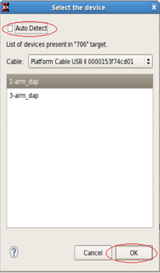

To select the cable-type and device, connected to the host, using the Debug
Configurations dialog box, do the following:
-
Select an application in the Project Explorer view..
-
Select Run > Debug configurations. The Debug Configurations
dialog box appears.
-
If a board is connected, with the host through one cable, then click
Debug. Alternatively, if more than one cable is connected to the
host, you must explicitly select the device. Click Select. The Select
the device dialog box appears

Note: To debug both PS and PL applications, it is mandatory to select both the
FPGA device and the PS device. The selection of FPGA device in debug
configuration may be ignored, when it is already configured using the
Program FPGA wizard.